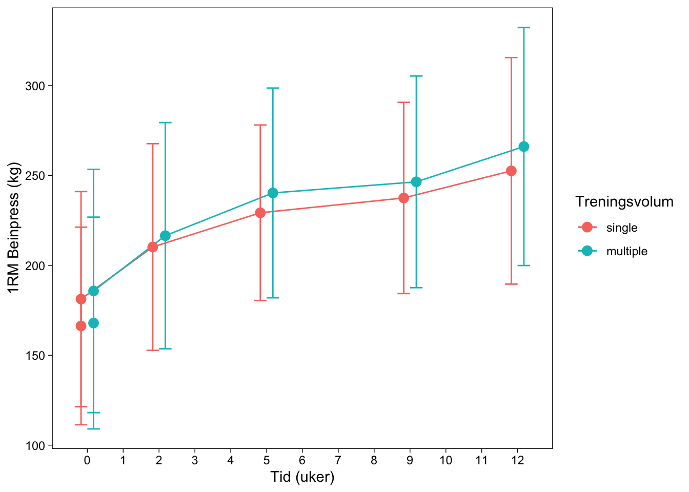
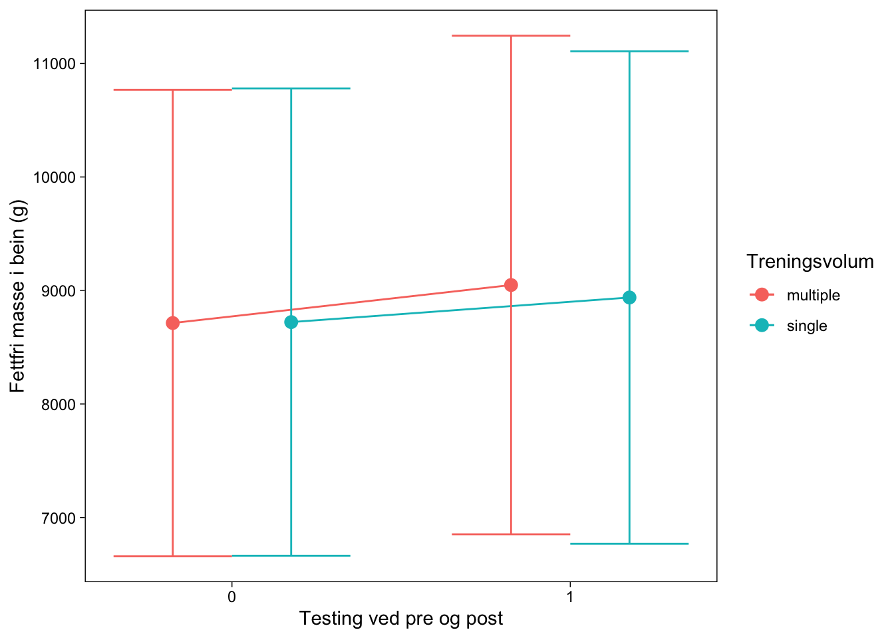

| time | Alder (år) |
Høgde (cm) |
Vekt (kg) |
|---|---|---|---|
| post | NA | 175.40 | 72.50 |
| pre | 22.91 | 174.96 | 70.57 |
5 Arbeidskrav 5: Analyse av repeterte målinger
5.1 Introduksjon
Styrketrening har en positv effekt på prestasjon i mange idretter som stiller krav til styrke, men også utholdenhetsidrett (Beattie et al. 2014; Rønnestad and Mujika 2014). I tillegg har styrketrening en positv effekt sett i et folkehelseperspektiv (Westcott 2012). Adaptasjoner til styrketrening varierer fra person til person, og henger sammen med en rekke faktorer, som treningsvolum, intensitet, valg av øvelser, hvile mellom sett, hastighet på utførelsen av øvelsen og hyppigheten på treninga (N 2009). I tillegg spiller genetiske disposisjoner og miljøfaktorer en rolle for variasjoner i tilpasninger (Timmons 2011).
For utrente personer som begynner med styrketrening varierer økningen i muskelstyrke med 1 %, målt som én repetisjon maksimum (1RM), med en variasjon på 0,1-0,3% (McDonagh and Davies 1984), samt at tvversnittet til de musklene som trenes økes med 0,1-0,5% per økt (Wernbom, Augustsson, and Thome 2007). Variasjonene i adaptasjonene på styrke- og muskelvekst er sannsynligvis avhengig av hvilken muskelgruppe som trenes, antall serier og repetisjoner, pauselengde, fibertypesammensetning og genetikk (Raastad 2010; Tønnessen and Rønnestad 2018). Det ser ut til at det er et dose-respons forhold mellom treningsmengde og styrkeøkning per tidsenhet (Raastad 2010). Treningsmengden bestemmes av antall økter, serier og hyppighet på øktene, i tillegg ser det ut til at hvor mange øvelser vi trener på hver muskelgruppe kan ha betydning. Hvilken treningsmetode som er gunstig for å få best mulig effekt er man uenige om. R. N. Carpinelli (2002); Ralph N. Carpinelli and Otto (1998) viser til at èn serie på hver muskelgruppe gir best effekt på økning i muskelstyrke, mens andre artikler viser at et moderat treningsvolum med tre serier er fordelaktig (Krieger 2010; Radaelli et al. 2015; Kelly et al. 2007). Når det kommer til økning i muskelmasse viser noen studier at det er en klar fordel ved å trene tre sett framfor ett sett, både for trente og utrente personer (Krieger 2010; Sooneste et al. 2013).
Målet med denne studien var å sammenlikne effekten av singelserie (1 sett) og multiserie (3 sett) treningsprotokoller på muskelstyrke og muskelmasse for utrente personer.
5.2 Metode
5.2.1 Deltakere
Det ble rekruttert 41 mannlige og kvinnelige deltaktere til å delta i studien, med ett kriteritum om å være ikke-røykere og mellom 18 og 40 år. Ekslusjonskriterer var intoleranse av lokal bedøvelse, redusert muskelstyrke på grunn av tidligere eller nåværende skader, gjennomført mer enn én styrkeøkt i uka det siste året før intervensjonen og inntak av medisiner som kan påvirke adaptasjoner til styrketrening. Alle deltakerne hadde tidligere erfaring med idrettsaktiviteter som for eksempel lagidretter, langrenn og turn. Deltakernes karakteristikker vises i Table 5.1.
5.2.2 Studiedesign
Intervensjonsperioden bestod av 12 uker med styrketrening på helkropp, gjennomført mellom september og november. Bein-øvelsene ble gjennomført seperat for hvert enkelt bein, for å muliggjøre differensiering av treningsvolum på samme deltaker. Hver deltaker ble tilfeldig tildelt enten single-set eller 3-set program for hvert enkelt bein. Hver deltaker gjennomførte dermed to ulike protokoller. Maksimal muskelstyrke ble målt før-, i uke 3, 5 og 9-, og etter intervensjonen. Kroppssammensetningen ble målt før og etter intervensjonen. I tillegg ble det tatt muskelbiopsi fra hvert bein fra vastus lateralis i uke 0 i hvilt tilstand, før og etter 1 time etter femte treningsøkt, og etter fullført treningsintervensjon i hvilt tilstand.
5.2.3 Treningsintervensjon
Før hver treningsøkt ble det gjennomført en standard oppvarmingsprotokoll på 5 minutter på ergometersykkel, etterfulgt av 10 repetisjoner av forskjellige kroppsvektøvelser i tillegg til ett sett på 10 repetisjoner ved ~50% av 1RM for hver motstandsøvelse. Beinøvelsene ble gjennomført i lik rekkefølge hver økt, enten som ett sett eller tre sett. Tiden på pause var mellom 90-180 sekunder. Treningsmotstanden økte gradvis gjennom intervensjonen med en start på 10RM de første to ukene, etterfulgt av 8RM i tre uker og 7RM i syv uker. Gjennomsnittelig antall overvåkede økter var 91% av utførte økter. På øktene som ikke var overvåket fikk deltakerne beskjed om å føre detjalerte logger. Disse ble kontrollert for å sikre progresjon og etterlevelse av protokollen.
5.2.4 Testing
I forbindelse med studien ble det gjennomført tester av både muskelstyrke, muskeltverrsnitt, kroppssammensetning, hormonelle målinger, biopsi av muskelvev, immunhisokjemi og protein analyse. Men i denne rapporten vil vi bare gå inn på muskelstyrke, muskeltverrsnitt og kroppssammensetning.
5.2.4.1 Muskelstyrke
Det ble gjennomført styrketester av isometrisk og isokinetisk uniliteral kneekstensjon målt ved et dynamometer. Deltakerne ble testet i maksimalt isokinetisk dreiemoment ved 60°, 120° og 240° s-1 hastighet. Deltakerne fikk flere forsøk på hver hastighet. Høyeste verdi for for hver hastighet ble brukt i analysene MFK-dreiemoment ble målt ved en knevinkel på 30°, etter isokinetisk testing. Her fikk deltakerne beskjed om å presse med maksimal kraft i 5 sekunder. De fikk to forsøk, med 30 sekunder hvile mellom. Beste forsøk ble brukt i analysene.
Maksimal styrke i kneekstensjonen ble målt som 1RM i unilateral beinpress og kneekstensjon. Testen startet med en spesifikk oppvarming i hver øvelse på 10, 6 og 3 repetisjoner på 50, 75 og 85% av antatt 1RM. Deretter ble 1RM funnet ved å gradvis øke vekta, inntil vekta ikke kunnes løftes med full “range of motion” lenger. Det høyeste godkjente løftet ble satt til 1RM, og deltakerne hadde fire til seks forsøk på hver øvelse.
Ved baseline ble både 1RM, isokinetisk og isometrisk styrketester gjennomført i to omganger med en avstand på minst fire dager. De beste verdiene ble brukt i de statistiske analysene. Styrketestene ble atskilt med minst 48 timer fra treningsøkt. Alle de tre testene utgjorde tilsammen en kombinert score for utregning av muskelstyrke.
5.2.4.2 Muskeltverrsnitt og kroppssammensetning
Det ble gjort målinger av muskeltverrsnittet av knestrekkerne (vastus lateralis, medialis, intermedius og rectus femoris) både før og etter intervensjonen ved bruk av magnetisk resonans (MR). Tverrsnittet ble målt på nøyaktig samme sted begge gangene for hver deltaker. Kroppsammensetningen ble målt før og etter intervensjonen ved bruk av dual-energy X-ray absorptiometry (DXA). DXA ble tatt to dager etter siste styrketreningsøkt, og deltakerne måtte faste de siste 2 timene og unngå hard fysisk aktivitet de siste 48 timene.
5.2.5 Dataanalyse og statistikk
De statistike analysene er gjort i R studio. For å se på effekten av treningsvolum på maksimal styrke, i form av 1RM i beinpress, og muskelhypertrofi, ble det brukt en mixed linear model (MLL). Her er muskelstyrke og muskelmasse den avhengige variabelen, mens tidspunkt og sett er den uavhengige. Statistisk signifikans ble satt til <0.05.
I dataanalysene ble syv deltakere ekskludert fordi de ikke fullført 85% av de planlagte treningsøktene av ulike grunner.
5.2.6 Resultat
Resultatene viser at både single-sett og multiple-sett gir en økning i muskelstyrke i form av 1RM i beinpress over en 12 uker lang treningsperiode, se Figur 5.1. I tillegg ser vi en økning i muskelmasse for begge gruppene, se Figur 5.2. Likevel kan vi se av Table 5.2 at økning i den maksimale muskelstyrken ikke kommer av forskjeller i antall sett, så lenge det ikke ble observert en effekt mellom gruppene i 1RM i beinpress. I samme tabell kan vi se at økningen i fettfri masse var større for de som trente multiple-sett, enn de som trente single-sett.


| Koeffisienter | Estimat | SE | DF | t.verdi | p.verdi |
|---|---|---|---|---|---|
| 1RM Beinpress | |||||
| Intercept | 182.57 | 10.19 | 35.19 | 17.91 | 0.00 |
| Tid | 6.42 | 0.35 | 314.03 | 18.47 | 0.00 |
| Gruppemultiple | 2.92 | 3.06 | 313.98 | 0.96 | 0.34 |
| Tid:Gruppemultiple | 0.71 | 0.49 | 314.00 | 1.45 | 0.15 |
| Fettfri Masse | |||||
| Intercept | 8,603.53 | 353.07 | 33.68 | 24.37 | 0.00 |
| Tid | 289.06 | 58.01 | 99.00 | 4.98 | 0.00 |
| Gruppemultiple | −14.53 | 58.01 | 99.00 | −0.25 | 0.80 |
| Tid:Gruppemultiple | −137.32 | 58.01 | 99.00 | −2.37 | 0.02 |
5.3 Diskusjon
Denne studien viser at over en 12-ukers treningsperiode får utrente personer en effekt av å trene både single-sett og multiple-sett, målt kg i 1RM i øvelsen beinpress. Effekten av å trene single-sett og multiple-sett var tilsvarende lik. Det kan være verdt å merke seg at disse deltakerne var utrente personer, som ikke har trent styrke mer enn én gang i uka det siste året. Det kan dermed se ut til at de får en effekt uansett. Tidligere studier har funnet best effekt på både single-sett (R. N. Carpinelli 2002; Ralph N. Carpinelli and Otto 1998) og multiple-sett (Krieger 2010; Radaelli et al. 2015; Kelly et al. 2007). Ettersom tidsklemma kan være et problem for mange, kan det være nyttig å vite at det å trene single-sett gir like god effekt på muskelstyrke som multiple-sett.
Det var likevel en signifikant forskjell i endring i fettfri kroppsmasse, der de som trente multiple-sett hadde en større økning enn de som trente single-sett. Dette støtter tidligere studier som fant at multiple-sett gir størt økning i muskelmasse sammeliknet med single-sett (Krieger 2010; Sooneste et al. 2013; Radaelli et al. 2015; Kelly et al. 2007).
Vi kan konkludere med at over en 12-ukers treningsperiode gir både single-sett og multiple-sett effekt på muskelstyrke og muskelmasse. Likevel vil multiple-sett være fordelaktig når man ser på utviklingen av muskelmasse.